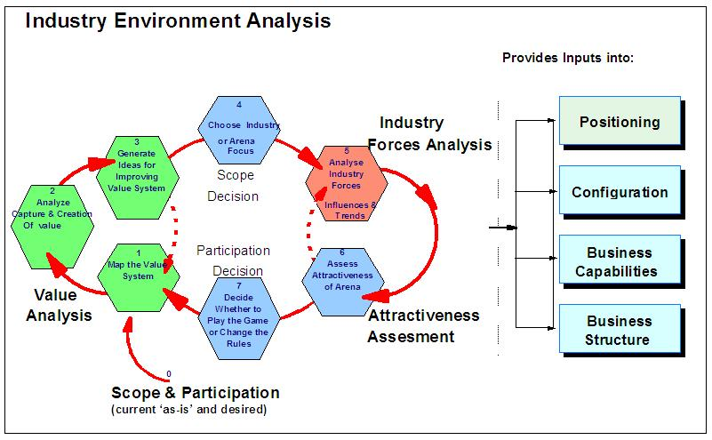

| Guideline: Developing Industry Environment Analysis |
 |
|
Relationships
| Related Elements |
|---|
Main Description
 Developing the Industry Environment Analysis is an iterative approach around the environmental themes, using a combination of interviews, workshops, secondary sources, and individual analysis. The following analysis steps may be performed (for details, refer to the technique paper): Scope & Participation:
Value analysis:
Industry forces analysis:
Attractiveness assessment:
Although the numbering scheme suggests a certain order, it is important to understand that the Industry Environment
analysis is an iterative process and depending on the issues to be addressed and information available the starting
point may differ. |
| © Copyright IBM Corp. 1987, 2012 All Rights Reserved Property of IBM These materials are intended only for use as part of an IBM engagement |